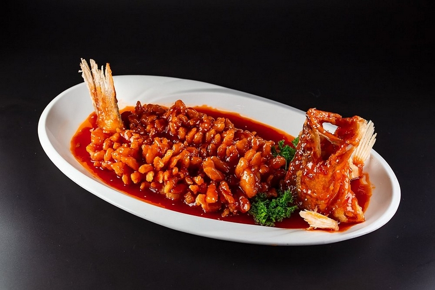
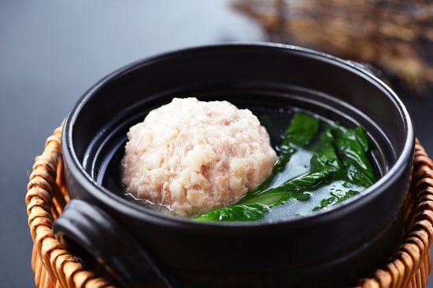
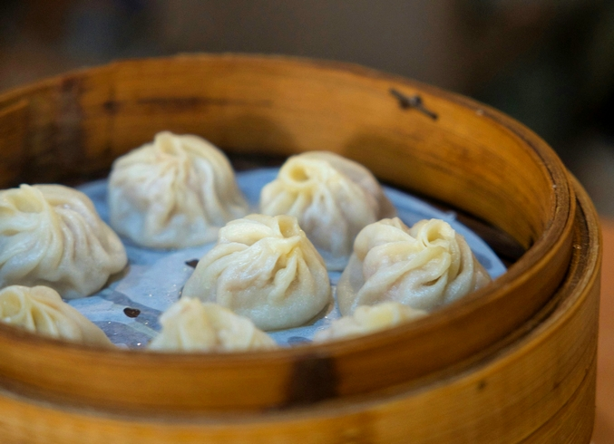

Bien que Shanghai soit aujourd’hui une municipalité à part entière, sa cuisine reste profondément enracinée dans la tradition gastronomique du Jiangsu, dont elle partage l’héritage. Avant d’obtenir son autonomie en 1927, la ville faisait partie de cette province, et son art culinaire en porte encore l’empreinte.
Le Jiangsu est une province de plaines située sur la côte est de la Chine, bordant la mer de Chine orientale et bénéficiant d'un climat subtropical humide.
Surnommée « le pays du poisson et du riz », cette région, irriguée par un dense réseau hydrographique, regorge de poissons d’eau douce et de crustacés. Ses eaux offrent également un environnement idéal pour la culture du riz et de nombreuses plantes aquatiques, telles que le lotus et la châtaigne d’eau.
Apparue à l’époque des Printemps et Automnes (771-476 av. J.-C.), la cuisine du Jiangsu revendique plus de 2 000 ans d’histoire.
Sous les dynasties Tang (618-907) et Song (960-1279), période faste marquée par un essor économique et des échanges commerciaux dynamiques, la cuisine du Jiangsu s’est enrichie d’influences extérieures. À cette époque également, les riches marchands de sel, soucieux d’afficher leur goût et leur prospérité, ont contribué à hisser cette gastronomie à un niveau de sophistication exceptionnel.
La diversité du Jiangsu a donné naissance à quatre grandes écoles régionales :
Grâce à ses saveurs équilibrées et à son raffinement, la cuisine de Huaiyang est régulièrement servie lors des banquets d’État en Chine. Si la cuisine du Jiangsu n’a pas acquis la même notoriété internationale que les cuisines sichuanaise et cantonaise, elle jouit d’une reconnaissance équivalente, voire supérieure, au sein de la Chine.
La cuisine du Jiangsu s'inscrit dans le concept de modération, propre à l’une des philosophies les plus influentes et profondes de Chine: le Juste Milieu.
Ainsi, les chefs cherchent à harmoniser les saveurs, à équilibrer la nutrition et à associer les couleurs. Les caractéristiques de la cuisine du Jiangsu se résument à des goûts doux, légèrement sucrés et umami, mais jamais trop sucrés ni trop acides. Les condiments et épices ne sont utilisés qu’avec parcimonie, dans le but de préserver le goût naturel et de faire ressortir la pure beauté des ingrédients. Les diverses plantes indigènes et les produits aquatiques enrichissent l’aromatique de la cuisine, et une simple cuillerée de bouillon fait ressortir la simplicité et la profondeur de la saveur.
Les saveurs prédominantes dans la cuisine du Jiangsu sont umami, fraîches, légèrement sucrées, naturelles et douces.
Dans la cuisine du Jiangsu, les textures jouent un rôle fondamental et sont souvent considérées presque aussi importantes que les saveurs.
Le braisage et le mijotage, techniques de cuisson privilégiées par les chefs du Jiangsu, confèrent aux plats à base de viande ou de volaille une texture tendre et moelleuse, sans les rendre trop fondants, mous ou pâteux.
Alors que la saveur de la cuisine du Jiangsu privilégie le minimalisme, son apparence est d’une grande sophistication. Puisque le goût des plats repose davantage sur la fraîcheur et la qualité des ingrédients, l’apparence devient le domaine d’expression du chef.
La sculpture alimentaire joue un rôle plus artistique que purement utilitaire. La ville de Yangzhou, dans la province du Jiangsu, est un lieu historique imprégné d’une culture ancienne et d’un riche patrimoine. C’est dans cette ville que la sculpture alimentaire a gagné en renommée, notamment sous la dynastie Qing (1644–1912). Aujourd'hui, cette pratique fait partie du patrimoine culturel immatériel du Jiangsu.
Les mets sont soigneusement façonnés grâce à des techniques de coupe minutieuses, illustrant la créativité et le savoir-faire culinaire. En touche finale, les plats sont ornés de décorations minutieuses sculptées dans les aliments. Cette alliance de saveurs subtiles et de présentation soignée est largement appréciée à travers la Chine, faisant de la cuisine du Jiangsu le choix privilégié pour les banquets.
La perche-écureuil, également connue sous le nom de poisson mandarin aigre-doux, est l'un des plus grands plats de la cuisine Suxi. Ce poisson frais et charnu est délicatement frit et façonné avec soin, puis nappé d'une sauce aigre-douce qui recouvre tout le poisson.
Le nom « écureuil » fait référence à la forme élaborée du poisson, qui rappelle la queue de cet animal. Ce plat est mentionné dans des archives datant de plus de 2000 ans.

La Tête de Lion ou boulettes de viande braisées est un plat emblématique de la cuisine Huaiyang constitué de grosses boulettes de porc ou de bœuf braisées avec des légumes.
Il existe deux variétés : la version blanche et la version rouge cuite avec de la sauce soja. La variété blanche est généralement mijotée ou cuite à la vapeur avec du chou napa. La version rouge, quant à elle, peut être braisée avec du chou ou cuite avec des pousses de bambou et des dérivés du tofu.

Le xiaolongbao est une variété de ravioli contenant une farce juteuse qui renferme un bouillon savoureux, traditionnellement cuit à la vapeur dans un petit panier en bambou. Originaire de Changzhou, il est devenu une spécialité emblématique de la cuisine Su.
Les xiaolongbao se dégustent traditionnellement au petit-déjeuner. Servis brûlants dans les mêmes paniers en bambou où ils ont été cuits à la vapeur, ils reposent généralement sur un lit de feuilles séchées ou un tapis en papier. Certains restaurants modernes remplacent ces supports par des feuilles de chou napa. Pour en exalter les saveurs, on les trempe généralement dans du vinaigre de Zhenjiang, parfois agrémenté d’une touche d'huile pimentée pour une note épicée.
